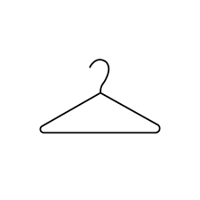
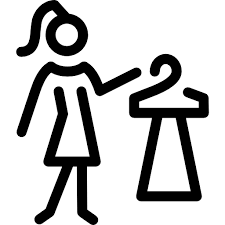

Asesoramiento
Pon un asesor de imagen en tu vida
Es verdad que mucha gente tiene un don especial para saber vestirse, pero la labor de un asesor de imagen va mucho más allá. Moda, estilismo, maquillaje, cabello, actitud, y habilidades sociales se combinan para proyectar una imagen personal deseada y correcta.
¿Qué es un asesor de imagen?
Es quien potencia cualidades físicas y optimiza la imagen personal. Tras una entrevista inicial, se realiza un análisis de imagen completo. También puede trabajar con colaboradores como peluqueros y maquilladores.
Funciones del asesor de imagen
La más importante es definir el estilo del cliente. Para eso, se analiza su rol de vida: profesional, personal, familiar, etc. También se hace un análisis morfológico y visagismo para identificar tipo corporal y facial.
Análisis de Estilo Personal
Cómo definir tu estilo personal
Te recomendamos realizar un estudio de imagen personal con profesionales para conocer tu cuerpo y cómo vestir adecuadamente.
Test: define tu estilo según tu vida
¿Cuánto tiempo pasás en el trabajo, en eventos, practicando deportes, salidas sociales? Conocer esto te ayudará a definir el estilo que mejor te representa.
Detox de Guardarropa
Con este servicio lograrás un guardarropa funcional que responda a tu estilo personal.
¿En qué consiste?
Eliminamos lo que no va con tu estilo y definimos una lista de prendas básicas.
¿Para qué te sirve?
Ganás espacio, evitás compras innecesarias y mantenés coherencia con tu estilo.
Modalidad
Analizamos cada prenda considerando colores, diseño, calidad y estilo personal. El servicio se realiza por temporadas: verano/invierno.